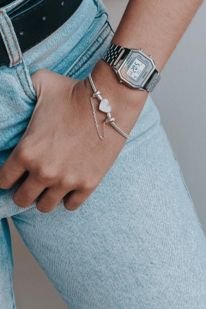

Quem Somos
A Yves Pratas surgiu em 2021 através do desejo de empreender, com um pequeno estoque de peças de pratas vendendo para os amigos, conhecidos e através das redes sociais. A vontade de expandir, a coragem de investir e a busca constante pelo novo idealizou o nome da marca, transmitindo o espírito do negócio. O nome da marca significa "Deus é misericordioso", pois acreditamos e temos isto como verdade de vida. Com a habilidade de liderar pessoas, a experiência em vendas e o desenvolvimento das redes sociais, a marca foi ficando cada vez mais conhecida, aumentando a procura por pessoas interessadas em adquirir as peças, como também, de revender.
